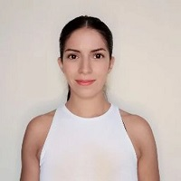

Curriculum Vitae
Daniela Leiva Encina
Resumen
Soy una Ingeniera agrónoma con 6 años de experiencia en el área enológica. En el año 2019 decidí comenzar un proceso de reconversión laboral, para lo cual realicé un Bootcamp de desarrollo Full Stack en Java. Luego de esto comencé a trabajar en Everis con desarrolladora y tras 8 meses ahí fui contactada por Kibernum con una nueva oferta laboral. Ya llevo 7 meses trabajando en esta consultora y prestandole servicion a Citi Bank.
Datos Personales
- Nombre: Daniela Leiva Encina
- Lugar de nacimiento: San Bernardo, Santiago, Chile
- Fecha de nacimiento: 08 de Diciembre de 1988
- Instagram:@dani.lei
Formación
| Periodo | Carrera | Centro Educacional |
|---|---|---|
| Julio 22'-Marzo'23 | Front End React | Desafío Latam |
| Enero '20-Agosto '20 | Full Stack Java | Talento Digital |
| Marzo '07-Agosto '13 | Ingenería agrónoma | Pontificia Universidad Catolica de Chile |
Premios y reconocimientos
Durante mis estudios de agronomía se me otorgaron 2 becas para la realización de un intercambio academico en Montpellier SupAgro. Estas son las siguientes:
- VRA-DRAI Scholarship for Academic Exchange.
- Région Languedoc Roussillon Scholarship.